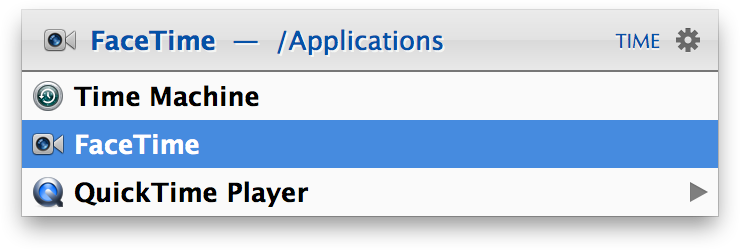

Sub-Search
Items that represent a collection of other items (e.g. folders, categories, playlists, etc.) can be sub-searched by pressing either the space bar or the right arrow key. If you now enter an abbreviation, only the selected context will be searched for matching items (instead of searching the whole index).
An ongoing sub-search is indicated with a blue text color.

Sub-searching the Applications folder
You can perform multiple sub-searches in the current context. If the entered abbreviation doesn’t yet deliver the expected results, simply type another abbreviation. To revert to the full index search, press Escape or
Command-Space.
Items that can be sub-searched
- Folders
- Applications (recent documents or associated data like contacts, iTunes Library, Safari Bookmarks, etc.)
- Categories, i.e. items of a particular kind, e.g. JEPG Images, Albums, etc.
- Bookmark Folders
- Playlists
- Photo Albums
- Indexing Rules
- etc.